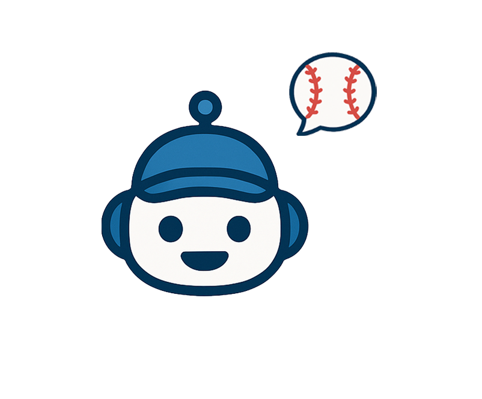

{%include "include/header.html"%}
<main class="announcement_list_container">
    <div class="page-head">
        <h1 class="page-title">공지사항</h1>
        <form class="notice-search" method="get" action="/support/announcement_list.html">
            <input type="text" name="keyword" placeholder="검색어를 입력하세요" />
            <button type="submit">검색</button>
        </form>

    </div>

    <!-- 목록 영역: 실제 서비스에선 서버/JS로 동적 채움 -->
    <ul class="notice-list" id="noticeList">
        {% for n in notices %}
        <li class="notice-item">
            <a href="/support/announcements/{{ n.notice_id }}">
                <div class="row">
                    <div>
                        <div class="title-line">
                            {% if n.is_pinned %}<span class="badge">공지</span>{% endif %}
                            <span class="title">{{ n.title }}</span>
                        </div>
                        <div class="meta">
                            <span class="category">{{ n.category }}</span>
                            <time datetime="{{ n.published_at | date('YYYY-MM-DDTHH:mm') }}">
                                {{ n.published_at | date('YYYY-MM-DD HH:mm') }}
                            </time>
                        </div>
                    </div>
                    <div class="right"><span class="views">조회 {{ n.view_count }}</span></div>
                </div>
            </a>
        </li>
        {% else %}
        <li class="notice-item">
            <div class="row">
                <div>표시할 공지가 없습니다.</div>
            </div>
        </li>
        {% endfor %}
    </ul>


    <!-- 페이지네이션 예시 -->
    <ul class="notice-list"></ul>
    <nav class="pagination" aria-label="공지 페이지 이동">
        <a href="?page=1">이전</a>
        <span>1 / 10</span>
        <a href="?page=2">다음</a>
    </nav>
    <!-- 목록이 비면 아래 블록만 보이도록 처리 -->
    <p class="empty" id="emptyMsg" style="display:none;">표시할 공지가 없습니다.</p>
</main>

<!-- 동적 바인딩을 위한 최소 스텁(선택) -->
<script>
    // 추후 서버 연동 시 교체: 쿼리스트링 유지, 빈 목록 처리 등
    (function syncEmpty() {
        var list = document.getElementById('noticeList');
        var empty = document.getElementById('emptyMsg');
        if (list && empty && list.children.length === 0) {
            empty.style.display = 'block';
        }
    })();
</script>

<!-- 플로팅 챗봇 버튼(이미지 교체만 하면 됨) -->
<button class="fab" id="fabBtn" aria-haspopup="dialog" aria-controls="chatModal" aria-expanded="false">
    
</button>
</body>
<script src="./assets/js/menubar.js"></script>

</html>